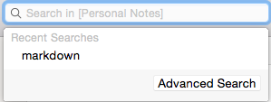
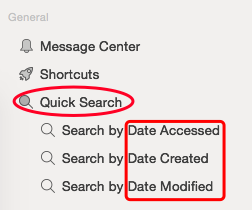

Quick Search
-
Note: Advanced search is available.You can search (in Personal Notes) on the top bar.
 -
Search on the leftmosr bar by date accessed, created or modified.

| Search Note Content | Parent topic: Search Note Content |